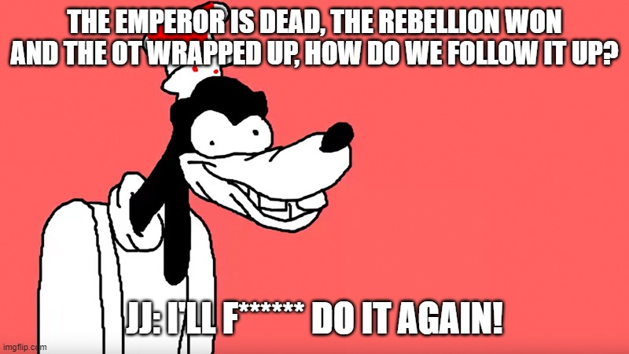

This is a spoiler warning, if you care about me spoiling the movie, Don't. The Mandalorian is on Disney+, settle for that instead.
My review summed up in the list below:
Bringing emperor palpatine back with a vague explanation was an obvious damage control for the backlash killing off Snoke created
There were no consequenses felt throughout the movie when characters do these fake-out deaths like Chewbacca and C-3PO.
New Characters like Finn and Poe were sidelined again for development-dodging Rey
Every retcon of the last movie was replaced with it's own twist that isn't much better
Rey being Palpatine's granddaughter is so dumb in every way
JJ Abrams' Star Wars
Looking back at Force Awakens, I realized that the real problem with
it is not because it's a rehash of New Hope, but rather it just doesn't work as a sequel.
When going from Return of the Jedi, the rebellion overthrew the empire and won the war re-establishing democracy again
but in Force Awakens this whole new civil war just lands on top of us like a ton of bricks! There was no explanation to how it came to be like the prequel trilogy did with the war in OT, Just two hours of JJ going "Hey remember this?"
How did the First Order came to be and why the hell was it wasting their resourses trying to find this one jedi when there are better things to worry about? Are they even competant at all? JJ:"remember how threatning the empire was?"

Emperor's New Resurrection
When it was advertised that emperor palpatine has returned despite getting thrown off into a
reactor core and obliterated in the death star explosion in Return of the Jedi,
reactions were skeptic to mixed at best. Most like me can see there was no way this was planned as Disney claimed,
he was brought back out of damage control for this dumpster fire of a trilogy. The only explanation for his return was the throw-away line
"The dark side of the force is a pathway to many abilities some would consider to be unnatural."
So if you can survive getting obliterated on the death star explosion with that explanation alone,
what makes us think he's gone for good when his lightning destroyed him at the end?
Not only does this establish a terrible precedent that the writer can rewrite a character back to life,
but it devalues the original trilogy instead of honoring it as it claims.
The rebellion victory and Anakin's sacrifice don't mean anything anymore.
Final rating
2 stars to be generous, settle for Mandalorian instead